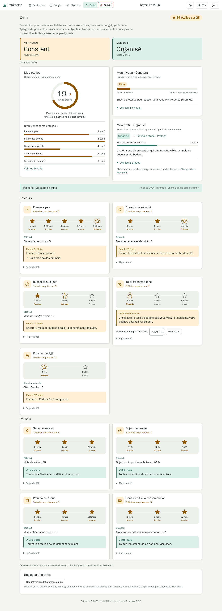

Défis et étoiles¶
Menu Défis de la barre principale : des étoiles pour de bonnes habitudes (saisir vos soldes chaque mois, tenir votre budget, garder une épargne de précaution, avancer vers vos objectifs, protéger votre compte), un niveau qui monte avec elles et un profil d'épargnant. Rien à saisir en plus : tout se calcule à partir de vos données.
Pas un conseil en investissement. Repères indicatifs, à adapter à votre situation : ce n'est pas un conseil en investissement. Aucun défi ne récompense un rendement, la part d'actions ou de cryptomonnaies, un produit ou davantage de risque, et Patrimeter ne vous compare jamais aux autres utilisateurs.

La page Défis¶
En haut, Mon niveau et Mon profil donnent vos deux statuts ; chacun mène à sa carte. Viennent ensuite :
- Mes étoiles : le total, sur un cadran, et D'où viennent mes étoiles ?, les étoiles gagnées par famille de défis (premiers pas, saisie des soldes, budget et objectifs, coussin et crédit, sécurité du compte) ;
- Mon niveau : où vous en êtes entre votre niveau et le suivant, et combien d'étoiles il manque ; Voir les 6 niveaux déplie l'échelle ;
- Mon profil : votre stade, le suivant, une barre quand sa condition se compte (mois saisis, mois de dépenses de côté…) et ce qu'il demande ; Voir les 5 stades déplie l'échelle ;
- Ma série : les mois de saisie de suite et le joker de l'année.
Les défis¶
Chaque défi donne jusqu'à trois étoiles, à des paliers (cinq pour Premiers pas, deux pour Compte protégé) :
| Défi | Une étoile | Deux étoiles | Trois étoiles |
|---|---|---|---|
| Premiers pas | une étoile par étape faite, cinq en tout (voir plus bas) | ||
| Série de saisies | 3 mois de suite | 6 mois de suite | 12 mois de suite |
| Patrimoine à jour | 1 mois où tous les comptes ont leur solde saisi | 6 mois | 12 mois |
| Coussin de sécurité | 1 mois de dépenses de côté | la moitié de votre cible | votre cible |
| Sans crédit à la consommation | 1 mois sans crédit à la consommation | 6 mois de suite | 12 mois de suite |
| Objectif en route | 25 % de votre objectif le plus avancé | 50 % | 75 % |
| Budget tenu à jour | 1 mois de budget saisi | 3 mois | 6 mois |
| Compte protégé | une clé d'accès (passkey) | une deuxième, en secours | |
| Taux d'épargne tenu | 1 mois au taux que vous visez | 3 mois de suite | 6 mois de suite |
- Un mois compte dans la série dès qu'au moins un solde y est saisi (pas seulement reporté). Tant que le mois en cours n'est pas saisi, la série continue depuis le mois précédent. Un mois oublié par année civile est pardonné (le joker), s'il suit un mois saisi : la page dit si le joker de l'année est encore disponible.
- Le coussin de sécurité se mesure en mois de dépenses (besoins et envies) du budget, et la cible est celle du foyer fiscal (6 mois par défaut). Sans foyer ni budget, le défi l'indique.
- L'objectif en route suit votre objectif d'épargne le plus avancé. Sans objectif, le défi l'indique.
- Le taux d'épargne tenu compte les mois de suite où le budget en vigueur prévoit une épargne au moins égale au taux que vous choisissez sur sa carte (de 5 % à 50 %) : Patrimeter n'en propose aucun. Sans taux choisi, ni budget, le défi l'indique. Un mois sans budget saisi reprend celui du mois précédent, comme dans le budget.
Chaque carte montre son score (« 1 étoile acquise sur 3 »), puis ses paliers de gauche à droite, chacun sous son étoile : Acquise (étoile pleine), Suivante (étoile cerclée) ou À venir. Viennent ensuite Déjà fait (où vous en êtes ce mois-ci) et ce qui manque pour la prochaine étoile, par exemple « Pour la 2ᵉ étoile : encore 3 mois de saisie de suite. » ; un défi qu'il faut d'abord rendre mesurable dit quoi faire (Avant de commencer). Règle du défi déplie ce qu'il récompense. Les défis aux étoiles toutes gagnées passent dans Réussis, avec la mention Défi réussi.
Une étoile gagnée ne se perd jamais : si une série s'arrête ou si un solde baisse, les étoiles déjà obtenues restent ; seule la progression du mois change.
Étoiles après la saisie du mois¶
Après Valider la saisie … du mois, un message annonce le meilleur score nouvellement atteint pour chaque défi, par exemple « Nouvelle étoile, défi « Série de saisies » : 1 sur 3. » Consulter d'abord le tableau de bord, la page Défis ou l'API ne fait pas disparaître l'annonce. Enregistrer à nouveau les mêmes soldes ne la répète pas. Si vous désactivez les défis, la saisie reste disponible sans annonce d'étoile. Vos étoiles et les annonces en attente sont conservées pour la réactivation.
Niveau¶
Le total des étoiles donne un niveau, de 1 à 6 : Curieux (dès le départ), Attentif (4 étoiles), Régulier (8), Prévoyant (13), Constant (18) et Maître de sa pyramide (24). En tout, 28 étoiles sont possibles : la page Défis affiche « 8 étoiles sur 28 » en haut, et l'échelle des six niveaux, du premier au dernier, avec le vôtre (vous êtes ici) et ce qui manque pour le suivant.
Profil d'épargnant¶
Le stade se calcule chaque mois ; c'est le plus haut échelon dont la condition est remplie, avec celles de tous les échelons du dessous :
- Découverte : un premier mois saisi ;
- Organisé : trois mois où tous les comptes ont leur solde saisi ;
- Protégé : une épargne de précaution qui atteint votre cible, en mois de dépenses du budget ;
- Serein : aucun crédit à la consommation à rembourser ;
- Bâtisseur : un objectif d'épargne atteint et douze mois de saisie de suite.
Le style, facultatif, se choisit dans Mon profil, section Défis et étoiles : Fourmi (un peu chaque mois), Projet (un projet daté), Foyer (le logement et son crédit d'abord) ou Horizon (le long terme). Il change seulement l'ordre des défis affichés ; il ne dit rien de ce que vous devriez acheter ni du risque à prendre. Le profil n'est pas un test de profil de risque.
Carte « Premiers pas »¶
Sur la page Patrimoine, tant que les cinq premières étapes n'ont pas été faites une fois, une carte les liste avec un lien vers chacune : décrire votre foyer, créer vos comptes, saisir les soldes du mois, ajouter votre résidence ou un bien immobilier, fixer un premier objectif d'épargne. Chaque étape vaut une étoile, comptée dès que la carte s'affiche. Tant que vous n'avez pas choisi de style d'épargnant, la carte vous le propose. Masquer cette carte la retire ; la page Défis la fait réapparaître.
Agents IA¶
Les défis se lisent aussi par l'API et le service MCP (GET /api/v1/challenges, outil get_challenges),
avec le même rappel : ce n'est pas un conseil en investissement.
Désactiver les défis¶
Réglages des défis, en bas de la page Défis, ou Mon compte > Mon profil, section Défis et étoiles : Désactiver les défis et les étoiles retire la page de la navigation, la carte « Premiers pas » et les messages après la saisie. Vos étoiles sont gardées ; Activer les défis et les étoiles les fait revenir.
L'administrateur peut aussi les retirer pour toute l'instance (GAMIFICATION=false,
installation).